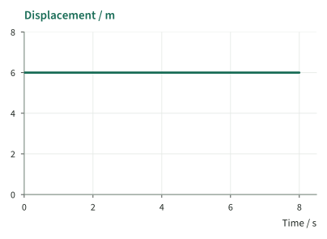
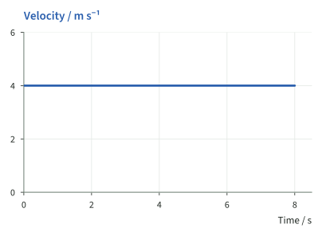
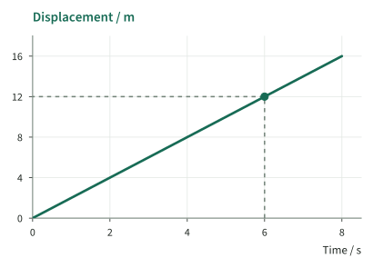
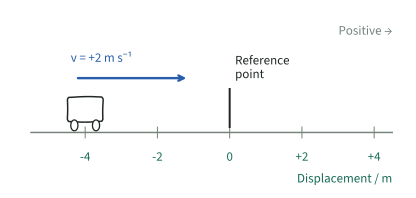
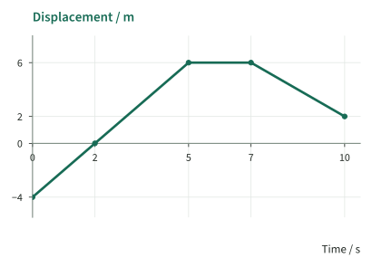
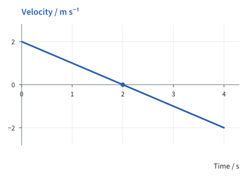
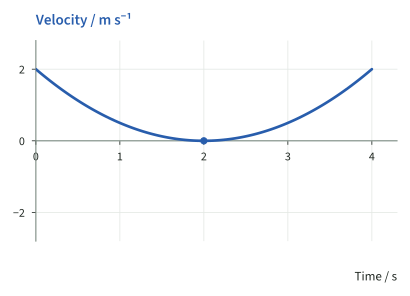
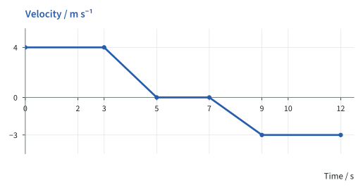
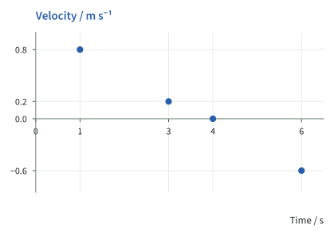

Reading motion graphs
Imagine watching a trolley move along a track. It passes a marker, pauses, then heads back. A motion sensor can record that journey on a graph. We’ll learn to read what the trolley is doing by checking what each axis shows.
What the axes show
Read the vertical-axis labels before deciding.
Displacement–time

Velocity–time

Check-in 1 · choose A or B
Both graphs have a horizontal line. Are both objects stationary?
No. On the first graph, displacement stays at +6 m: that object is stationary. On the second, velocity stays at +4 m s−1: that object keeps moving in the positive direction.
Both graphs show time along the bottom. Now check the label on the vertical axis. That tells you what the height of the line means. Two lines can look alike and still tell very different stories.
| Graph | Vertical axis | What its value tells you |
|---|---|---|
| Displacement–time | Displacement, s, in m | Position relative to the chosen reference point. |
| Velocity–time | Velocity, v, in m s−1 | How fast the object moves and in which direction. |
In these notes, green traces show displacement and blue traces show velocity. The axis labels and units always identify the quantity, even without colour.
Reading a coordinate
Pick one time on the graph and ask what the reading is at that moment. Try it here: what is the trolley’s displacement at 6 s?

- Find 6 s on the time axis.
Move vertically until you meet the green trace.
- Read across to the displacement axis.
The value is +12 m.
- Turn the reading into a sentence.
At 6 s, the trolley is 12 m on the positive side of the reference point.
This point gives a displacement. It does not directly give the trolley’s speed.
Another sensor reports v = −3 m s−1 at 6 s. What does that point mean?
At 6 s, the object is moving at 3 m s−1 in the negative direction. We read a velocity, so the minus sign tells us which way it’s moving. It doesn’t tell us where it is.
Time chooses the instant. The vertical axis chooses the quantity.
Displacement and direction
Choose a marker on the track to measure from. We’ll call that our reference point and take right as positive. Now we can make sense of the signs.

The trolley has negative displacement because it is left of the marker.
Its velocity is positive because it is moving right. It is travelling towards the marker.
The trolley is left of the marker, yet it’s moving right. So it has negative displacement and positive velocity at the same moment. Where it is and which way it’s moving are two different things.
Displacement sign: which side?
s > 0: positive side of the reference point.
s = 0: at the reference point.
s < 0: negative side of the reference point.
Velocity sign: which direction?
v > 0: moving in the positive direction.
v = 0: momentarily at rest, or stationary for an interval.
v < 0: moving in the negative direction.
A lift’s displacement falls from +12 m to +4 m. Is it now below the reference level?
No. It finishes at +4 m, so it is still above the reference level. The lift moved down towards that level without going below it. A displacement can decrease and still be positive.
Worked example: displacement–time
Follow this trolley’s journey from left to right across the graph. Take right as the positive direction along the track. Find when it passes the reference point and when it stays still.

- Start at 0 s, then find where the trolley passes the marker.
At 0 s, s = −4 m: the trolley starts left of the reference point. At 2 s, s = 0: it reaches that point.
- Follow the displacement to 5 s.
It continues right, reaching +6 m at 5 s.
- Look at the flat part of the line.
From 5–7 s, displacement stays at +6 m. The trolley is stationary for
- Read the final stage.
From 7–10 s, displacement falls to +2 m. The trolley moves left, but finishes 2 m right of the reference point.
Does the trolley cross the reference point again on its final stage?
No. The trace falls from +6 m to +2 m and stays above zero. The trolley moves towards the reference point without reaching it.
Look at where the trace passes through s = 0. That’s when the trolley passes the reference point. Here it goes straight through at 2 s. Being at the reference point doesn’t mean it has stopped.
Zero velocity and reversal
On this type of graph, the vertical reading is the velocity itself. A flat line at +5 m s−1 means the object keeps moving in the positive direction. At −5 m s−1, it keeps moving in the opposite direction. Both are moving, even though their lines are flat.
To find a stop, look for v = 0. One zero reading tells us the object is at rest at that moment. If the line stays at zero for a while, the object stays still for that whole time.
Compare the signs before and after 2 s, then read the answer.
Graph A

Graph B

Check-in 2 · choose A or B
Both continuous traces reach zero velocity at 2 s. Which object reverses direction?
Only A turns around. Its velocity is positive before the stop and negative afterwards. B reaches zero, then moves in the positive direction again. Both stop for an instant, but only A changes direction.
Velocity changes from −3 to −7 m s−1. Has the object reversed?
No. Both velocities are negative, so the object keeps moving in the same direction. Its speed rises from 3 to 7 m s−1. Remember that the line shows velocity. It isn’t a drawing of a downhill path.
Zero displacement is a place. Zero velocity is a state of motion.
Worked example: velocity–time
Now follow a delivery robot along a straight track, with right as positive. Read its velocities at 2 s and 10 s. Then find when it stops and explain which way it moves before and after the stop.

- Find the readings at the two times.
At 2 s, v = +4 m s−1: rightwards.
At 10 s, v = −3 m s−1: leftwards.
- Follow the line while velocity is positive.
From 0–3 s, velocity is constant at +4 m s−1. From 3–5 s, velocity remains positive until it reaches zero. The robot slows while moving right.
- Find how long the robot stays still.
From 5–7 s, the trace stays at zero velocity. The robot is stationary for
- Follow the line below zero.
After 7 s, the robot moves left. Its speed increases until it reaches 3 m s−1 at 9 s. From 9–12 s, it keeps that velocity.
The robot stays at zero velocity for 2 s. Has its direction still reversed after the stop?
Yes. Before the stop it moves right; afterwards it moves left. The pause doesn’t change that comparison. It has turned around, even though it spent some time at rest first.
At 10 s, the velocity is negative. That tells us the robot is moving left. It doesn’t directly tell us whether the robot is left or right of where it started.
Using sensor readings
This time, the sensor saved just four readings. Each dot is one recorded velocity. Notice that we haven’t drawn a line between the dots: we don’t have readings for those gaps.
What was measured?
Use the values that are actually available.

| Time / s | Velocity / m s−1 |
|---|---|
| 1 | +0.8 |
| 3 | +0.2 |
| 4 | 0 |
| 6 | −0.6 |
The cart moves in the positive direction at 1 s and 3 s, is at rest at 4 s, and moves in the negative direction at 6 s.
At 3 s the cart moves in the positive direction; at 6 s it moves in the negative direction. It must have changed direction between those readings. But the dots don’t show every movement in that gap.
Do these four points prove that the cart reversed exactly once, at 4 s?
No. We know the cart was at rest at 4 s. We don’t know everything it did between the readings. It could have changed direction at other times too. We’d need the missing part of the record to identify each turn or stop.
We met this issue with two velocity readings in Lesson 2. A reading tells us what happened at that moment. To describe the motion between readings, we need more information.
Practice and recall
Write each answer before reading its solution. Use this reading order:
- Check what the vertical axis measures. Displacement or velocity?
- Find the time you have been asked about. Read coordinates against the labelled scale.
- Ask what the sign and line tell you. Distinguish position, direction and rest.
- Say only what you can tell from the graph. Give the value, unit and physical meaning.
At 4.0 s, a displacement–time graph reads +7.0 m. What does the coordinate mean?
Answer: At 4.0 s, the object is 7.0 m on the positive side of the reference point. The graph has not directly given a speed of 7.0 m s−1.
A displacement–time trace falls from +3 m to −2 m. A velocity–time trace falls from +3 m s−1 to −2 m s−1. What does crossing zero mean in each case?
Displacement–time: the object passes the reference point while moving in the negative direction. Velocity–time: on a continuous trace, the object reverses from the positive direction to the negative direction. The two zero crossings describe different events.
A velocity–time graph stays at −2 m s−1 from 4 s to 9 s. Is the object stationary? How long does this stage last?
- Read velocity. It is constant and negative, so the object moves steadily in the negative direction.
- Read the interval.
The object moves at a constant 2 m s−1 in the negative direction for 5 s.
Can you read an object’s position directly from a velocity–time graph?
No. Check the vertical-axis label: it says velocity, not position. You can read how fast the object is moving and use the sign to find its direction. Later, we’ll learn how graphs can help us find other quantities too.
Definitions and graph meanings
Displacement · recall
distance in a specified direction from a point
A vector, measured in m. For these journeys, the reference point sets zero displacement.
Velocity · recall
rate of change of displacement
A vector, measured in m s−1. Its sign gives direction along the chosen axis.
- Time is horizontal. Read the named quantity vertically.
- A horizontal displacement–time section means stationary.
- A horizontal velocity–time section means constant velocity. It means stationary only when v = 0.
- A changing velocity value means changing motion; speed can increase or decrease while velocity stays negative.
- Displacement sign tells you which side of a reference point. Velocity sign tells you direction of motion.
- Reversal requires opposite velocity signs before and after rest. A zero reading alone is not enough.
- Separate recorded points do not establish all motion between them.